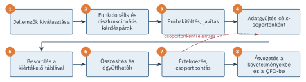
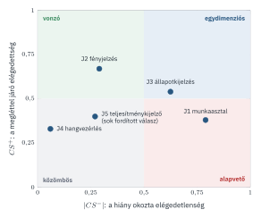

- Mire való? Az érdekelt felek elvárásainak osztályozása aszerint, hogyan függ az elégedettség az egyes jellemzők teljesülésétől: alapvető, egydimenziós, vonzó, közömbös vagy fordított.
- Tanulási eredmény: az eszközlap feldolgozása után képes leszel Kano-kérdőívet összeállítani és kiértékelni, az elvárásokat Kano-kategóriákba sorolni, és kiszámítani az elégedettségi és elégedetlenségi együtthatókat.
- V-lépés: 2. Az érdekelt felek igényei; eredménye a követelmények súlyozásának és a QFD-nek a bemenete.
- Bemenet: a vizsgálandó jellemzők listája, a célcsoportok, elérhető válaszadók.
- Kimenet: jellemzőnkénti besorolás, elégedettségi együtthatók (, ), elégedettségi diagram.
- Időigény: a kérdőív összeállítása 2–3 óra, az adatgyűjtés napok, a kiértékelés a sablonnal fél óra.
- Kézikönyv: 5. fejezet, 5.5. szakasz.
7.1. Mikor használd?
- Ha sok lehetséges jellemző közül kell választani, és tudni kell, melyik kötelező, melyikben érdemes versenyezni, és melyik lehet megkülönböztető.
- Szolgáltatásoknál és felhasználói termékeknél, ahol a felhasználók köre elég nagy ahhoz, hogy legalább néhány tucat válasz gyűljön össze csoportonként.
- A követelmények súlyozása előtt, a minőség házának bemeneteként.
Mikor ne? Ha a jellemző annyira új, hogy a válaszadók nem tudják elképzelni, előbb mutasd be leírással, képpel vagy prototípussal. Ha csak néhány válaszadó van (például egy megrendelő), interjú és megbeszélés a jobb eszköz.
7.2. Lépések

- Válaszd ki a jellemzőket. Legyenek egymástól függetlenek, a felhasználó számára érthetők, és megoldásfüggetlenek, amennyire lehet. A kérdőív hossza miatt egyszerre legfeljebb 15–20 jellemzőt vizsgálj.
- Fogalmazd meg a kérdéspárokat. Minden jellemzőhöz egy funkcionális kérdés („Mit érezne, ha …?”) és egy diszfunkcionális kérdés („Mit érezne, ha nem …?”) tartozik. A két kérdés szövege a tagadástól eltekintve legyen azonos.
- Próbáld ki a kérdőívet néhány emberrel, és javítsd a félreérthető megfogalmazásokat.
- Gyűjts adatot célcsoportonként. Rögzítsd a válaszadó csoportját is (például korcsoport, műszak, használati gyakoriság), hogy később szét lehessen bontani az eredményt.
- Sorold be a válaszpárokat a kiértékelő táblázattal (7.1. táblázat).
- Összesíts és számold ki az együtthatókat (7.1. egyenlet).
- Értelmezd az eredményt. Ha két kategória gyakorisága közel azonos, vagy sok a fordított válasz, bontsd az elemzést célcsoportokra.
- Vezesd át az eredményt a követelményekbe és a minőség házába. Az alapvető jellemzőkből kötelező követelmények lesznek. Az egydimenziósakhoz versenyképes célérték tartozik. A vonzók a koncepcióválasztás megkülönböztető szempontjai.
A kérdőív
Mindkét kérdésre ugyanaz az öt válaszlehetőség tartozik:
- Tetszene.
- Elvárom, magától értetődő.
- Közömbös.
- Elviselném.
- Nem tetszene.
Példa egy kérdéspárra a KoboCella operátorai számára:
- Funkcionális: „Mit érezne, ha a munkaasztal magassága gombnyomásra az Ön testmagasságához igazodna?”
- Diszfunkcionális: „Mit érezne, ha a munkaasztal magassága rögzített lenne?”
Kiértékelés
| Funkcionális \ diszfunkcionális | 1 Tetszene | 2 Elvárom | 3 Közömbös | 4 Elviselném | 5 Nem tetszene |
|---|---|---|---|---|---|
| 1 Tetszene | K | V | V | V | E |
| 2 Elvárom | F | Kö | Kö | Kö | A |
| 3 Közömbös | F | Kö | Kö | Kö | A |
| 4 Elviselném | F | Kö | Kö | Kö | A |
| 5 Nem tetszene | F | F | F | F | K |
Az elégedettségi együtthatók (Berger és mtsai. 1993):
A azt mutatja, mennyire növeli a jellemző megléte az elégedettséget (0 és 1 között). A azt, mennyire csökkenti a hiánya (−1 és 0 között). Az elégedettségi diagramon a értéket a függvényében ábrázoljuk. A négy negyed (0,5-ös határokkal) a vonzó, az egydimenziós, az alapvető és a közömbös jellemzőket különíti el.
Állítsd be egy jellemző válaszainak számát, és figyeld, hogyan változik a besorolás és az elégedettségi együtthatók! A kiinduló értékek a KoboCella fényjelzésére vonatkoznak.
7.3. Kidolgozott példa: a KoboCella operátori Kano-elemzése
A KoboCella-csapat a cella kezelőfelületének és munkahelyének öt lehetséges jellemzőjéről kérdezte meg a három műszak 24 operátorát. A válaszok összesítését és az együtthatókat a 7.2. táblázat, az elégedettségi diagramot a 7.2. ábra mutatja (szemléltető adatok).
| Kód | Jellemző | V | E | A | Kö | F | K | Besorolás | ||
|---|---|---|---|---|---|---|---|---|---|---|
| J1 | Állítható munkaasztal-magasság | 3 | 6 | 13 | 2 | 0 | 0 | alapvető | 0,38 | −0,79 |
| J2 | Fényjelzés a következő műveletről | 11 | 5 | 2 | 6 | 0 | 0 | vonzó | 0,67 | −0,29 |
| J3 | A kobot állapotának és zónájának kijelzése | 4 | 9 | 6 | 5 | 0 | 0 | egydimenziós | 0,54 | −0,63 |
| J4 | Hangvezérlés | 5 | 1 | 0 | 12 | 6 | 0 | közömbös | 0,33 | −0,06 |
| J5 | Egyéni teljesítménykijelző a cellán | 3 | 3 | 1 | 8 | 9 | 0 | fordított | 0,40 | −0,27 |

Értelmezés:
- Az állítható munkaasztal alapvető elvárás (). Hiánya erős elégedetlenséget okozna, ezért a csapat kötelező követelményként rögzítette.
- A fényjelzés vonzó. Nem várják el, de nagy elégedettséget okozna, és a betanulást is gyorsíthatja. Olcsó, ezért bekerült a koncepcióba.
- Az állapotkijelzés egydimenziós. Minél jobb, annál elégedettebbek. A biztonságérzet és a bizalom miatt itt a versenyképes szint a cél.
- A hangvezérlés a többségnek közömbös, a hat fordított válasz a zajos környezetből fakadhat. Nem kerül be a koncepcióba.
- Az egyéni teljesítménykijelző fordított. Az operátorok egy része kifejezetten nem szeretné. Ez fontos jelzés. A csapat nem egyéni, hanem műszakszintű, a folyamat javítását szolgáló kijelzést tervez, és a megoldást az üzemi tanáccsal is egyezteti. A kis mintán (24 fő) a besorolások bizonytalanok, ezért a csapat a fontos döntések előtt célzott interjúkkal is ellenőrzi az eredményt.
7.4. Sablon és notebook
- kano_sablon.xlsx: jellemzők és kérdések, válaszok kódolva (1–5), automatikus besorolás a kiértékelő táblázattal, összesítés, együtthatók és elégedettségi diagram. A kézikönyv VárosiBringa-példájának 120 válaszával feltöltve.
- kano_elemzes.ipynb · Megnyitás Google Colabban: ugyanez Pythonban: besorolás, együtthatók és elégedettségi diagram. A beépített példával azonnal futtatható; saját adatokhoz a kitöltött sablon „Válaszok” lapját olvassa be. Telepítést nem igényel.
7.5. Előnyök és korlátok
| Előnyök | Korlátok |
|---|---|
| A jellemzők nem lineáris hatását is megmutatja; segít a prioritások kijelölésében | Sok válaszadót igényel; kis mintán a besorolás bizonytalan |
| Egyszerű, szabványos kérdőív; gyorsan kiértékelhető | A kétkérdéses forma fárasztó, és a válaszadók félreérthetik |
| Feltárja a megosztó és a nem kívánt jellemzőket is | Pillanatfelvétel; a besorolás idővel változik (a vonzóból elvárt lesz) |
- Nem tükörszimmetrikus kérdéspár. Ha a két kérdés nem ugyanarról szól („Mit érezne, ha gyors lenne?” / „Mit érezne, ha lassú lenne?”), a besorolás torzul. A diszfunkcionális kérdés a jellemző hiányára kérdezzen.
- Csoportok összemosása. Ha a diákok és az idősebb lakók válaszait együtt összesítjük, a jellemző közömbösnek tűnhet, miközben az egyik csoportnak alapvető, a másiknak fordított.
- Túl sok jellemző. Harminc kérdéspár után a válaszok minősége romlik.
- A „leggyakoribb kategória” túlértelmezése. Ha a két legnagyobb kategória közel azonos, ne mondj ki egyértelmű besorolást.
7.6. Mintapromptok
Kano-kérdőívet készítünk [célcsoport] számára a következő rendszerhez:
[rendszer leírása]. A vizsgálandó jellemzők: [lista].
Feladat:
1. Minden jellemzőhöz fogalmazz meg egy funkcionális ("Mit érezne, ha ...?")
és egy diszfunkcionális ("Mit érezne, ha nem ...?") kérdést, egyszerű,
a célcsoport számára érthető nyelven.
2. Ellenőrizd, hogy a két kérdés a tagadástól eltekintve azonos-e, és
hogy egyik sem sugall választ.
3. Jelezd, ha egy jellemző valójában két jellemzőt takar, vagy megoldást
ír elő igény helyett.
Formátum: táblázat (jellemző | funkcionális | diszfunkcionális | megjegyzés).Az alábbi táblázat egy Kano-elemzés összesített eredménye
(V, E, A, Kö, F, K darabszámok és CS+, CS− értékek), [n] válaszadóval,
[csoportok leírása].
[IDE ILLESZD BE A TÁBLÁZATOT]
Feladat: jelezd, mely besorolások bizonytalanok (közel azonos
kategóriagyakoriságok, sok fordított vagy kétséges válasz, kis minta),
és javasolj célzott kérdéseket vagy csoportbontást a tisztázásukra.
Ne számold újra az együtthatókat; ha számítási hibát látsz, jelezd.7.7. Feladat
Válassz ki saját projektedben 5–8 jellemzőt, és készíts róluk Kano-kérdőívet. Gyűjts legalább 20 választ a fő felhasználói csoport(ok)ból, értékeld ki a sablonnal, és írd le, hogyan módosítja az eredmény a követelmények prioritását.